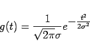
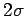
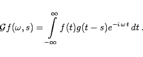
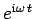
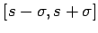
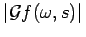
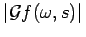

Zeit-Frequenz-Analyse nennt man die Charakterisierung eines Signals bezüglich der in ihm enthaltenen Frequenzen und der Zeitpunkte, zu denen diese Frequenzen auftreten. Dazu wird das Signal in zeitliche Abschnitte (Fenster) aufgeteilt und anschließend nach FOURIER transformiert. Man spricht deshalb auch von einer ,,gefensterten FOURIER-Transformation`` WFT(Windowed FOURIER-Transformation).
Die Fensterfunktion ist so zu wählen, daß sie ein Signal außerhalb eines Fensters ausblendet. Von GABOR wurde als Fensterfunktion
|  | (15.155) |
verwendet (s. die folgende Abbildung)
Diese Wahl kann damit erklärt werden, daß g(t) mit der ,,Gesamtmasse 1`` um den Punkt t=0 konzentriert ist und die Fensterbreite als konstant (etwa ) angesehen werden kann. Die GABOR-Transformation einer Funktion f(t) ist dann von der Form
|  | (15.156) |
Sie gibt an, mit welcher komplexen Amplitude die Grundschwingung  während des Zeitintervalls  in f vertreten ist, d.h. tritt die Frequenz  in diesem Intervall auf, dann besitzt sie die Amplitude .
in diesem Intervall auf, dann besitzt sie die Amplitude .